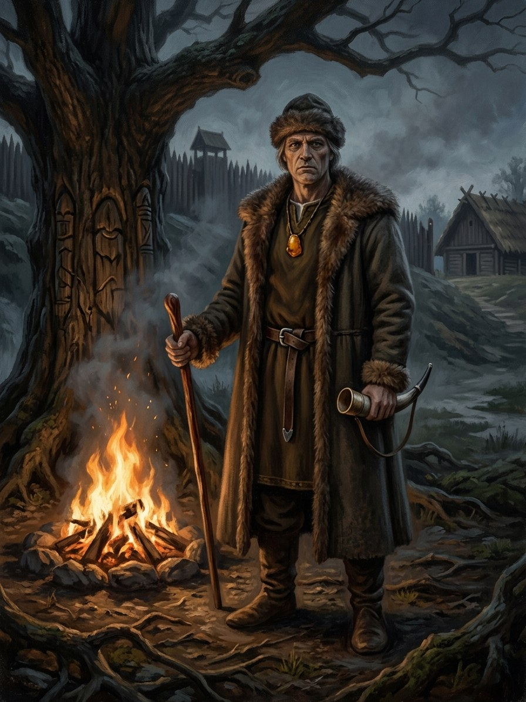

Velnias¶
Folk sources [Historical record]¶
Velnias (Latvian Velns) means “devil” in every Lithuanian Christian text. Whether a pre-Christian god lies behind the devil is argued. The name is usually linked with vėlė, “soul of the dead”, though some linguists doubt the link, as they doubt the equation with Slavic Veles. Greimas and Vėlius reconstruct an old god of the dead, cattle and wealth, the antagonist of Perkūnas (the Ivanov–Toporov combat-myth model, which has critics). Sceptics read a Christian devil that gathered pagan traits. Seventeenth-century lexicography (Sirvydas) records a Velinas. No medieval chronicle names him among the Lithuanian gods.
What is solid is folklore collected in the 19th–20th centuries: Perkūnas chases Velnias, who hides in trees, stones and animals, which is why lightning strikes them; and Velnias is the dupe of clever peasants, as in the crop-division tale (ATU 1030) with its turnips and rye.
Velnias

Velnias · god¶
Type |
god |
Note |
Lord of the underworld, the dead, subterranean waters, cattle, wealth, and bargains. |
In the saga¶
Domain: the dead, the underworld, wealth, cattle, bargains, cleverness. Element: none. Force-face: a shard, the Shadow-Seller. Not evil but hungry and fair: every deal is kept to the letter, and he can only be beaten by cleverness. He is patron of Sandėris.
Book I ch. 19 is titled for his bargain, and the void beneath the jester’s mask (ch. 30) is “the hollow where the dead keep the past”. Book IV ch. 21 states that he never offers more than he has, and an old woman repeats the saying that Velnias fears only Perkūnas and women at the river (ch. 30). In Book V ch. 19 he gives Žygimantas the golden chain. Book VI shows the older face: the Krivis recognises his “small thing” at a pact (ch. 8), and the Sovijus tale is told in a forge at Algirdas’s death (ch. 29). Servants: aitvaras, žaltvykslės, pinčiukas.
Offerings & taboos¶
Folk custom: never name him lightly, give him no shelter in a storm, and make no pact at a crossroads at midnight. The dead are owed their feast at Vėlinės. Weakness: he is bound to his own words, so the clever peasant wins by planting turnips and rye.
Pronunciation¶
VEL-nyahs (IPA [ˈvʲælʲnʲɐs]); two syllables only.
Relations
Servants: Aitvaras (fire-tailed thief) — Hatchling of Velnias’s root-wealth. · Slogutis (the presser) — Tentative link: hatred sent in sleep; the bestiary names no patron. · Vilkatas / vilkolakis (cursed werewolf) — Curse-belts are Velnias’s craft, sold through raganos. · Žaltvykslės (bog-lights, treasure-flames) — Velnias’s ledger of cheated boundaries and debts.
Shards: Velnias’s small shapes (velniukai) · Šešėlių Pardavėjas / Henė
Domain The dead, the underworld, wealth, cattle, bargains, cleverness
Layer God (Layer I) · the Roots, Anapilis. A shard of him became the Force Šešėlių Pardavėjas
Force-face The Shadow-Seller (Henė), a splinter, not the whole god
Offerings None attested. The dead are owed their feast at Vėlinės
Taboos Naming him lightly; giving him shelter in a storm; a pact at a crossroads at midnight; shaking his hand
Signs A gentleman in green or black with a goose-foot; black cats and dogs; warm coins; sounds that die; three blackened stones; a stranger who laughs a great deal by the fire
The deal. Anything, worded precisely. He drafts, never cheats, and keeps every deal to the letter. Free at first; the thread comes later.
The dead and the past. He keeps them, and with them every broken oath he has bought as a debt.
Breaking his word. A god's bargain is iron, which is what makes him beatable by the clever.
Perkūnas. He flees him, hiding in trees, stones and animals.
Interest. Paid later, with something worth more than you thought.
The aitvaras. A keeper's soul goes down to his roots at death.
Cleverness. Beaten only by wit (the crop-division tale): turnips and rye. Nobody has beaten the neighbours.
Connections¶
graph LR
aitvaras["Aitvaras (fire-tailed thief)"]
shadow_seller["Šešėlių Pardavėjas / Henė"]
slogutis["Slogutis (the presser)"]
velnias["Velnias"]
velnio_pavidalai["Velnias's small shapes (velniukai)"]
vilkatas["Vilkatas / vilkolakis (cursed werewolf)"]
zaltvyksles["Žaltvykslės (bog-lights, treasure-flames)"]
shadow_seller -->|Shard of| velnias
aitvaras -->|Servant of| velnias
zaltvyksles -->|Servant of| velnias
vilkatas -->|Servant of| velnias
velnio_pavidalai -->|Shard of| velnias
slogutis -->|Servant of| velnias
style velnias stroke-width:3px